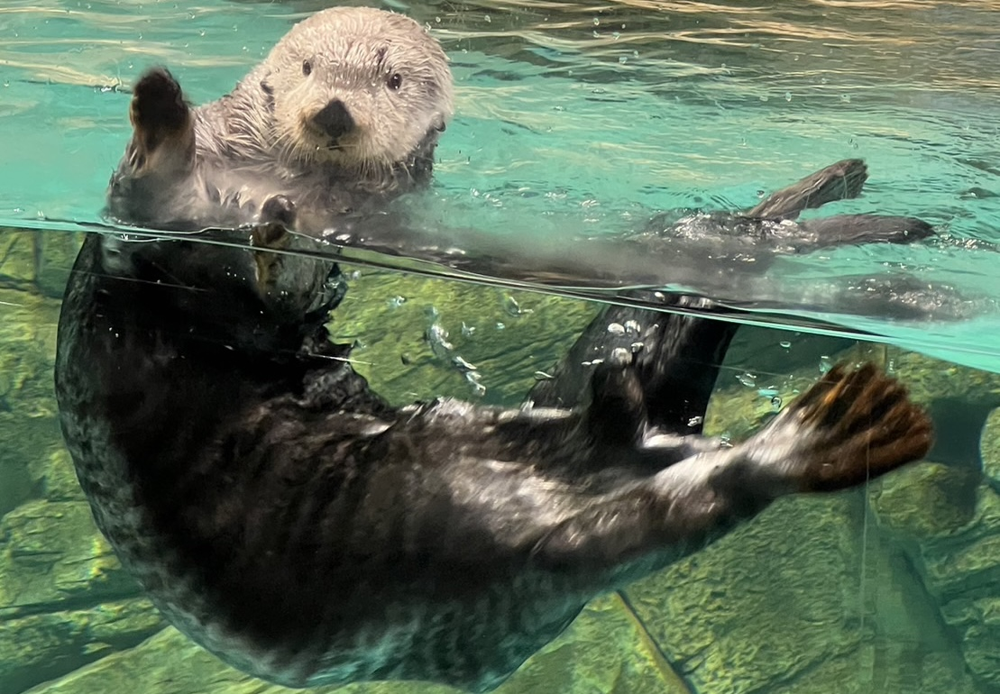

ラッコ
ラッコ（海獺、Sea otter, Enhydra lutris）は、食肉目イタチ科ラッコ属に分類される哺乳類で、海獣の一種。現生種では本種のみでラッコ属を構成する。
北太平洋の、北アメリカ大陸から千島列島の沿岸にかけて棲息。毛皮を採取するため乱獲され、日本では20世紀初頭に絶滅したと考えられていたが、北海道東部（道東）で1980年代から再び目撃されるようになり、モユルリ島（根室市）、霧多布岬（浜中町）では繁殖も確認されている。水族館で飼育もされている。
世界的には生息域や個体数の減少を受けて保護対象となっており、ワシントン条約で取引が規制され、国際自然保護連合（IUCN）が2000年から絶滅危惧種に分類している。

分布
アメリカ合衆国西海岸（オレゴン州沿岸部およびアラスカ州南岸）、カナダ（ブリティッシュコロンビア州沿岸部）、ロシア東部。
模式標本の産地（基準産地・タイプ産地・模式産地）はカムチャッカ（コマンドル諸島とする説もあり）。以前は日本の北海道から千島列島、カムチャッカ半島、コマンドル諸島、アリューシャン列島、アラスカ半島およびアラスカ州南岸、バハカリフォルニア半島（メキシコ）にかけて分布していた。近年ではオレゴン州とカリフォルニア州中部にかけてなどの分布が途切れている範囲があり、日本やメキシコでは散発的な記録があるのみとなっている。分布の北限は北極海の氷域で、南限はカリフォルニアとオオウキモ（ジャイアントケルプ）の分布と一致している。
形態
体長100 - 130センチメートル。尾長25 - 37センチメートル。体重オス22 - 45キログラム、メス15 - 32キログラム。イタチ科最大種。尾は短く扁平。尾の基部には臭腺（肛門腺）を持たない。体毛密度が高く、哺乳類のなかでも最も高い部類に入る。1平方センチメートルあたり10万本以上の柔らかい下毛（綿毛）が密生し、これはヒトで言えば6cm2の皮膚に頭髪全てが生えているのに相当する密度である。全身では8億本もの体毛が生えている。潜水する時も綿毛の間に空気の層ができることで、寒冷な海洋でも生息することができる。全身をくまなく毛繕いするために柔軟な体、皮膚を具えている。体色は赤褐色や濃褐色・黒と変異が大きく、頭部や喉・胸部は灰色や黄白色。吻部には洞毛が密生する。幼獣は全身が黄褐色、亜成獣は全身が濃褐色の体毛で被われる。
吻端の体毛がない裸出部（鼻鏡）は菱形。臼歯は扁平で幅広く、貝類や甲殻類を噛み砕くことに適している。大臼歯は大型で丸みを帯び、固い獲物を噛み砕くことに適している。前肢は小型で、指の境目は不明瞭。爪は引っ込めることができる。後肢は鰭状。水分は海水を飲むことで補っており、過剰な塩分を排泄するためにカワウソ類の平均の2倍もの大きさの腎臓を持つ。
生態
海洋の沿岸部に生息し、主に海岸から1キロメートル以内の場所に生息する。主に岩場が近くにあり、海藻が繁茂した環境に生息する。陸上に上がることは稀であるが、天候が荒れた日には上がることもある。単独で生活するが、繁殖期にはペアで生活する。休息時には数十頭から数百頭の個体が集合することもある。昼行性で、夜間になると波のない入江などで海藻につかまって休む。生息密度が高く人間による攪乱のない地域では、陸上で休むこともある。防寒効果を維持するため、頻繁に毛繕いをし、毛皮を清潔に保っている。幼獣の毛繕いは母親が行う。主に水深20メートルまで潜水するが、水深97メートルまで潜水した例もある。主に52 - 90秒間の潜水を行うが、最長で約4分の潜水を行った例もある。
食性と海洋生態系への影響
食性は肉食で、貝類、甲殻類、ウニ類などを食べる。これらがいなければ魚類を食べることもある。時には海面で海鳥を捕殺することもある。獲物は前肢で捕えることが多い。硬い獲物は歯や前肢を使い、中身をこじあけて食べる。貝類やウニ類は胸部や腹部の上に石を乗せ、それに叩きつけて割り中身だけを食べることもある。このため「道具を使う（霊長類を除いた）哺乳類」として紹介されることもある。魚を捕らえるのは苦手とする説もある。亜種カリフォルニアラッコでは道具を使い貝類を割る行動が比較的確認されているものの、主に柔らかい獲物を食べる亜種アラスカラッコでは道具を使って貝類を割ることは稀とされる。なお、動物園などで飼育されているラッコの場合は自然界には無い道具を使用するほかに水槽のガラスに貝殻を叩きつけることも確認されており、日本の豊橋総合動植物公園では強化ガラスを叩きつけすぎて強化ガラスにヒビが入った例も確認されている。また貝類を食べる際の石等の道具や食べ切れなかったアサリ等は、わき腹のたるみをポケットにして、しまい込んでおく癖がある。
皮下脂肪が少なく、体温維持のため1日あたり体重の2-3割もの魚介類を食べる必要がある。
ラッコが長く生息する海域ではウニが食い尽くされて、主に貝類を捕食するようになるといわれる。そういった生態から漁業被害を訴えられることもあるが、ウニが増えるとコンブなどの海藻が食い尽くされる弊害があり、ラッコが生息することでそれを防ぐ効果もある。2010年代以降に再定着しつつある北海道東部でも、ウニの食害を問題視する漁業者がいる半面、ウニを減らしてコンブを保護する効果を期待する意見もある。
繁殖
繁殖様式は胎生。交尾、出産は海上で行う。春になると雄は雌に交尾のアピールをし、雌の承諾が得られると並んで仰向けになって波間に浮かぶ。雄は交尾の際、体勢を維持するために雌の鼻を噛む。たいていはすぐに治る軽傷で済むが、稀に傷が悪化し、食物を食べられなくなることなどで命を落としてしまうケースもある。雄は交尾が済むと別の雌を探しにいき、子育てに参加することはない。妊娠期間は6か月半から9か月。1回に1頭、まれに2頭の幼獣を産む。腹の上に仔を乗せながら、海上で仔育てを行う。幼獣は親が狩りをしている間、波間に浮かんで親が戻ってくるのを待つ。このときは無防備になり、ホホジロザメに約1割の幼獣が捕食されてしまう。幼獣は親から食べられる物の区別や道具の使い方を習う。
人間との関係
古くから毛皮が利用されていたが、18世紀、19世紀に銃によって多数が捕獲された。乱獲によってカナダのブリティッシュコロンビア州、アメリカ合衆国ワシントン州およびオレゴン州の個体群は絶滅した。
近年は流出した石油による影響のほか、漁業による混獲により生息数が減少している。ラッコは鰭脚類などと比べると体が小さく皮下脂肪が相対的に薄いため、体毛が油で汚染され、水を弾かなくなると、たちまち海水に体温を奪われて凍死してしまう。また、体毛が濡れると密度の高い体毛の間に空気を蓄えられなくなり、浮力が減少して溺死することもある。例えば、1989年のプリンス・ウィリアムス湾でのタンカー座礁事故では、流出した原油により少なくとも1,016頭の死亡が確認されている。
悪天候やエルニーニョ現象などの気候変動に伴う食物の変動、およびそれに伴う幼獣の餓死による影響も懸念されている。
アラスカやアリューシャン列島ではキタオットセイ、トド、ゼニガタアザラシなどの鰭脚類が減少し、それらを捕食していたシャチが本種を襲うことが増加し、生息数が減少している。
カリフォルニアではトキソプラズマなどの感染症の蔓延により生息数が減少している。
飼育
日本では1982年から水族館での飼育ブームが起き、最多時（1994年）には28館で122頭が飼育されていた。しかしながら、1998年にはアメリカ合衆国が輸出禁止策を打ち出し、新規でラッコを飼育する水族館が無くなった。また老衰死や繁殖を目的とした移動などで、ラッコを飼育する水族館は激減した。
2022年12月時点では、マリンワールド海の中道（福岡市）で1頭、鳥羽水族館（三重県鳥羽市）で2頭の合わせて2館3頭となっており、老齢と数の少なさから飼育下繁殖も困難である。